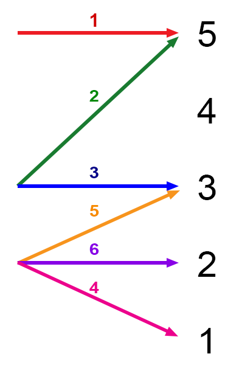

Gods
- There are no traditional D&D4e gods
- The 12 Chinese Zodiacs are the “gods” of this world
- They are the source of Divine power
- They expect their followers to embody their traits
- Summary of their traits are here
Language
- No “common” languages apart from Common
- Naming will be using the Cantonese tones
- Eladrin have a dialect (convenience called “Elvish”), which has spread into the world
- Other dialects do exist (modelled as other languages) and introduced as required

Machines
- There are no automatons (e.g. clockwork)
- But mechanics and gadgets do exist
- Also therefore no Warforged at the start